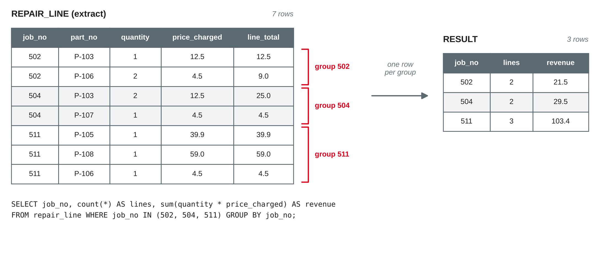

Data Management
Aggregate functions, GROUP BY and HAVING · subqueries and views · indexes, transactions and ACID
DHBW · Digital Business Management (Business IT) · Semester 2
GROUP BY and HAVINGSELECT l.quantity * l.price_charged AS line_total FROM repair_line AS l WHERE l.job_no = 511; -- 39.9, 59.0, 4.5 SELECT l.quantity * l.price_charged AS line_total FROM repair_line AS l JOIN job_mechanic AS jm ON jm.job_no = l.job_no WHERE l.job_no = 511; -- 6 rows
Own example based on the bike shop case from sessions 3–9.
import sqlite3
con = sqlite3.connect("bikeshop.db")
con.execute("PRAGMA foreign_keys = ON")
for script in ["bikeshop-schema.sql", "bikeshop-data.sql",
"bikeshop-data-session09.sql"]:
with open(script, encoding="utf-8") as f:
con.executescript(f.read())IF NOT EXISTS or drop them firstOwn example based on the bike shop case from sessions 3–9.
Counting, summing and grouping
SELECT count(*), count(price), count(DISTINCT brand),
sum(price), avg(price), min(price), max(price)
FROM bike;| count(*) | count(price) | count(DISTINCT brand) | sum | avg | min | max |
|---|---|---|---|---|---|---|
| 15 | 13 | 8 | 28487 | 2191.31 | 299 | 5899 |
count(*) counts rows; count(column) counts non-NULL values; DISTINCT counts different valuessum, avg, min, max ignore NULL: the average is over the 13 known pricesBased on SQLite (n.d.-a) and Elmasri and Navathe (2016, Chapter 7).
SELECT sum(price), total(price), avg(price), count(*) FROM bike WHERE brand = 'Bianchi'; -- NULL | 0.0 | NULL | 0 SELECT sum(price) / count(*) FROM bike; -- 1899 (integer division!) SELECT avg(price) FROM bike; -- 2191.31
sum, avg, min, max return NULL, count returns 0; SQLite's total() returns 0.0sum / count(*) is not the average: it divides by all rows — and in SQLite, integer / integer is an integeravg(coalesce(price, 0))Based on SQLite (n.d.-a, n.d.-c).

Own illustration based on SQLite (n.d.-b) and the course sample data.
SELECT brand, count(*) AS bikes, round(avg(price)) AS avg_price FROM bike GROUP BY brand ORDER BY bikes DESC, brand;
| brand | bikes | avg_price |
|---|---|---|
| Cube | 4 | 1599.0 |
| Gazelle | 3 | 2599.0 |
| Trek | 3 | 1016.0 |
| Brompton | 1 | 1749.0 |
| Canyon | 1 | NULL |
| … | … | … |
GROUP BY brand: one result row per brand — 8 rowsSELECT is either in GROUP BY or inside an aggregateGROUP BYBased on Elmasri and Navathe (2016, Chapter 7), SQLite (n.d.-b) and Tanimura (2021).
SELECT e.name, count(jm.job_no) AS jobs FROM mechanic AS m JOIN employee AS e ON e.employee_no = m.employee_no LEFT JOIN job_mechanic AS jm ON jm.employee_no = m.employee_no GROUP BY m.employee_no, e.name ORDER BY jobs DESC;
| name | jobs |
|---|---|
| Deniz Arslan | 5 |
| Jan Hoffmann | 4 |
| Katrin Vogel | 3 |
| Sophie Lindner | 2 |
| Tim Krause | 0 |
LEFT JOIN keeps Tim Krause, who has no repair job yetcount(jm.job_no) counts his NULL as 0 — count(*) would count the added row and report 1Based on Elmasri and Navathe (2016, Chapter 7) and SQLite (n.d.-a).
SELECT brand, count(*) AS bikes FROM bike WHERE customer_no IS NOT NULL -- rows: only sold bikes GROUP BY brand HAVING count(*) >= 2; -- groups: brands with 2+ sold bikes
WHERE | HAVING | |
|---|---|---|
| filters | rows, before grouping | groups, after grouping |
| aggregates allowed? | no | yes |
| result here | 11 sold bikes | Cube 4, Trek 2 |
FROM → WHERE → GROUP BY → HAVING → SELECT → ORDER BY → LIMITWHERE count(*) >= 2 → error: misuse of aggregate: count()Based on SQLite (n.d.-b) and Elmasri and Navathe (2016, Chapter 7).
SELECT brand, model, count(*) FROM bike GROUP BY brand; -- Cube | Kathmandu | 4 ?
model is neither grouped nor aggregated: Cube has four models — which one is shown?GROUP BY: SELECT member_type, count(*) FROM … returns one row with an arbitrary typeCheck every SELECT column: grouped or aggregated? If neither, the result is a guess.
Based on SQLite (n.d.-b).
Write one query per question. Predict the number of rows first.
Queries inside queries
SELECT frame_no, brand, model, price FROM bike WHERE price > (SELECT avg(price) FROM bike) -- 2191.31 ORDER BY price DESC; -- 6 rows
SELECT in parentheses inside another statementWHERE price > avg(price) is not allowed: WHERE works on rows, before any aggregate existsBased on Elmasri and Navathe (2016, Chapter 7) and SQLite (n.d.-c).
-- customers with a repair job from March 2027 on
SELECT name FROM customer
WHERE customer_no IN (SELECT b.customer_no
FROM bike AS b
JOIN repair_job AS j ON j.frame_no = b.frame_no
WHERE j.job_date >= '2027-03-01'); -- 6 rows
-- customers without a bike?
SELECT name FROM customer
WHERE customer_no NOT IN (SELECT customer_no FROM bike); -- 0 rows!IN (subquery): the subquery returns a list of values (one column)NOT IN is never TRUE… FROM bike WHERE customer_no IS NOT NULL → Felix Wagner — or use NOT EXISTSBased on SQLite (n.d.-c) and Elmasri and Navathe (2016, Chapter 7).
-- customers who never had a repair job
SELECT c.name
FROM customer AS c
WHERE NOT EXISTS (SELECT 1
FROM bike AS b
JOIN repair_job AS j ON j.frame_no = b.frame_no
WHERE b.customer_no = c.customer_no); -- Felix Wagner, Noah Fischerc.customer_no) and is evaluated per customerEXISTS is TRUE if the subquery returns at least one row; the selected values do not matter (SELECT 1)NOT EXISTS is not affected by NULL — the safe way to ask "… without …"Based on Elmasri and Navathe (2016, Chapter 7) and SQLite (n.d.-c).
SELECT j.job_no, r.revenue, count(jm.employee_no) AS mechanics
FROM repair_job AS j
JOIN (SELECT job_no, sum(quantity * price_charged) AS revenue
FROM repair_line
GROUP BY job_no) AS r ON r.job_no = j.job_no
LEFT JOIN job_mechanic AS jm ON jm.job_no = j.job_no
WHERE j.job_no = 511
GROUP BY j.job_no, r.revenue; -- 511 | 103.4 | 2SELECT avg(revenue) FROM (… GROUP BY job_no) → 94.14, not the average per line (58.84)Based on Elmasri and Navathe (2016, Chapter 7) and SQLite (n.d.-b).
Saved queries with a name
CREATE VIEW job_revenue AS
SELECT j.job_no, j.job_date, j.frame_no,
coalesce(sum(l.quantity * l.price_charged), 0) AS revenue
FROM repair_job AS j
LEFT JOIN repair_line AS l ON l.job_no = j.job_no
GROUP BY j.job_no, j.job_date, j.frame_no;
SELECT strftime('%Y-%m', job_date) AS month, sum(revenue)
FROM job_revenue GROUP BY month; -- 2027-03 | 733.2 …SELECT with a name; it is used like a table in FROMSELECT again — always up to dateBased on SQLite (n.d.-d) and Elmasri and Navathe (2016, Chapter 7).
| Statement | Result in SQLite |
|---|---|
SELECT * FROM job_revenue ORDER BY revenue DESC LIMIT 3 | 507 (649), 511 (103.4), 510 (41.8) |
INSERT INTO job_revenue (job_no, revenue) VALUES (600, 10) | error: cannot modify job_revenue because it is a view |
DROP VIEW job_revenue | view gone, tables and data unchanged |
CREATE VIEW IF NOT EXISTS … | no error if the view already exists |
job_overview = job_revenue + bike + ownerCREATE TABLE … AS SELECT …Based on SQLite (n.d.-d).
Speed and safety
EXPLAIN QUERY PLAN SELECT * FROM bike WHERE customer_no = 101; -- SCAN bike CREATE INDEX idx_bike_customer ON bike (customer_no); EXPLAIN QUERY PLAN SELECT * FROM bike WHERE customer_no = 101; -- SEARCH bike USING INDEX idx_bike_customer (customer_no=?)
EXPLAIN QUERY PLAN shows whether SQLite scans or searches; the result of the query is the sameBased on SQLite (n.d.-e, n.d.-f, n.d.-h) and Elmasri and Navathe (2016, Chapter 17).
| Index … | Why |
|---|---|
automatically on PRIMARY KEY and UNIQUE | needed to check uniqueness |
on foreign key columns, e.g. repair_job (frame_no) | joins and "all jobs of a bike" |
on columns used often in WHERE or ORDER BY | frequent business questions |
CREATE UNIQUE INDEX on a column | enforces a rule (e.g. one e-mail per customer) |
INSERT, UPDATE, DELETE must update each indexlower(brand) = 'cube'Based on Elmasri and Navathe (2016, Chapter 17) and SQLite (n.d.-f, n.d.-h).
try:
with con: # one transaction
con.execute("UPDATE bike SET customer_no = 106 "
"WHERE frame_no = 'GZT884'") # sell the bike
con.execute("INSERT INTO repair_job (job_no, job_date, "
"description, frame_no) VALUES (513, "
"'2027-04-15', 'Handover check', 'GZT889')") # typo!
except sqlite3.Error as e:
print(e) # FOREIGN KEY constraint failedBEGIN; … COMMIT; or ROLLBACK; — without BEGIN, each statement is its own transactionBased on SQLite (n.d.-g), Python Software Foundation (n.d.) and Elmasri and Navathe (2016, Chapter 20).
| Property | Meaning | Bike shop example |
|---|---|---|
| Atomicity | all or nothing | sale and handover job are stored together or not at all |
| Consistency | from one consistent state to another | no repair job for a bike that does not exist |
| Isolation | concurrent transactions do not see each other's unfinished work | the shop counter does not see the half-done sale |
| Durability | once committed, it survives crashes | after COMMIT, a power cut does not lose the sale |
The term ACID was coined by Haerder and Reuter (1983): "atomicity, consistency, isolation, and durability".
Based on Haerder and Reuter (1983) and Elmasri and Navathe (2016, Chapter 20).
| Step | Connection A | Connection B |
|---|---|---|
| 1 | UPDATE spare_part SET list_price = 7.50 WHERE part_no = 'P-101' (not committed) | |
| 2 | SELECT list_price … → 6.9 (old value) | |
| 3 | UPDATE … SET list_price = 8.00 … → database is locked | |
| 4 | commit() | |
| 5 | SELECT list_price … → 7.5 |
Based on SQLite (n.d.-g) and Elmasri and Navathe (2016, Chapter 20).
Answered with SQL
Fresh database with all three scripts. Predict the number of rows first.
GROUP BY; at least one with HAVING and one with a subqueryAggregate queries, views and transactions are part of milestone 3 (database and queries, after session 12).
count(*) counts rows, the others ignore NULLGROUP BY gives one row per group; every SELECT column is grouped or aggregated; HAVING filters groups, WHERE filters rowsIN (a list), EXISTS (correlated); NOT EXISTS is safe with NULL, NOT IN is notPreparation: finish the hands-on questions and worksheet 10; bring your team's aggregate queries and view.